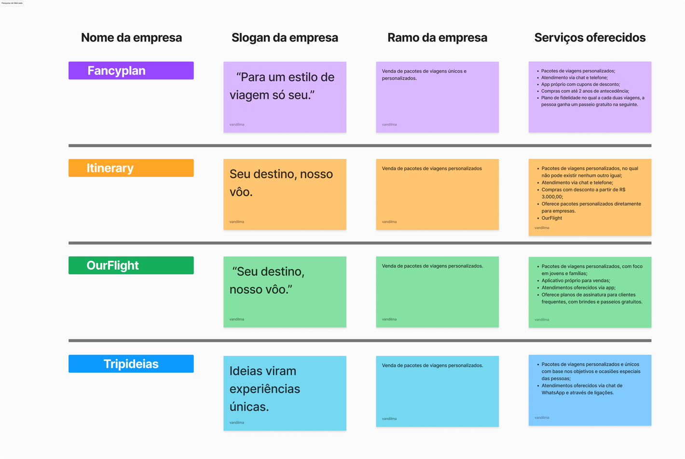
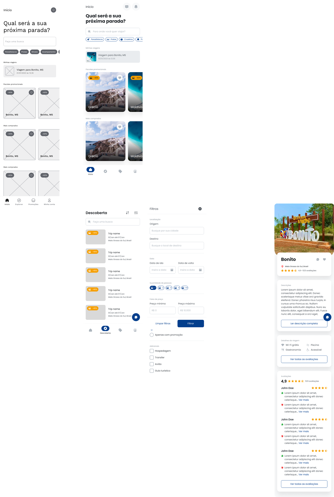

Minha Atuação
UX Design
UX Research
UI Design
Introdução ao projeto
O InovaTour foi criado para transformar a maneira como as pessoas exploram novos destinos. Combinando a descoberta de restaurantes, o planejamento de trilhas personalizadas e um sistema de recompensas gamificado, o InovaTour visa tornar cada viagem uma experiência única e memorável. Além disso, o InovaTour se propõe a aquecer o comércio local, permitindo que turistas troquem suas moedas por descontos em estabelecimentos locais.
Cenário atual
identificamos que muitos viajantes sentiam dificuldade em planejar suas viagens de forma integrada, utilizando múltiplas plataformas para encontrar restaurantes, planejar itinerários e descobrir novos locais. Além disso, percebemos uma oportunidade de fortalecer o comércio local, incentivando os turistas a gastar em negócios da região através de um sistema de recompensas.
Entre os problemas encontrados nesse cenário específico, estavam:
- O turista tem dificuldade em planejar viagens de forma integrada
- Comerciantes locais tem dificuldade de adquirir novos clientes
- Falta giro e estímulo para explorar lugares.
Processo de design realizado

- Contexto do problema: etapa que realizamos as pesquisas e análise de dados de mercado, conhecendo o perfil de uso, dores da pessoa cliente, dores da pessoa usuária, e gerando as personas e protopersonas.
- Proposta de valor: visão estratégica de como usamos o UX para resolver as dores das pessoas usuárias e ser rentável para empresa, como entregável dessa etapa, fizemos o canvas de proposta de valor e o UX canvas, sempre buscando equilíbrio entre pessoa usuária e negócio.
- Contexto da solução: momento em que realizamos o desenvolvimento da proposta de resolução do produto.
Conhecendo a pessoa usuária
Pesona 1

Pesona 2

Você pode verificar a tabulação completa dessa pesquisa e os artefatos criados no projeto do FigJam.
Conhecendo o concorrente
Você pode ver o benchmarking completo no FigJam.
Estrategia
Após conhecer as pessoas usuárias, chegamos no momento de entender como a empresa poderia lucrar com a venda de mais pacotes de viagens. Para conseguir ter essa visão estratégica, foi realizada uma dinâmica para montar o UX Canvas.

Solução
Após passar pela visão da pessoa usuária e do negócio, começamos a desenhar a solução para os problemas propostos. Para isso, foi realizado um processo cocriativo, o fluxo de interação de telas, e teste de usabilidade até chegar no protótipo navegável que foi entregue ao time de desenvolvimento.
Processo cocriativo - Crazy Eights
Podemos indicar que, nesse processo de cocriação, foi feita uma dinâmica de Crazy Eights, uma proposta de imaginar a tela.
Teste de usabilidae
Realizei 5 rodadas de teste de usabilidade, onde 80% das pessoas usuárias conseguiram sucesso ao executar as atividades de compra de pacotes de viagem.
Entrega do projeto
Para ver o Protótipo completo entre no Figma.
Cliqui aqui Para vê o protótipo funcional
Atenção
Por questões de propriedade intelectual e LGPD, as telas tiveram os dados sensíveis modificadas para que pudessem ser publicadas nesse portfólio.
Aprendizados
- Criei um raciocínio em UX, aprendendo o processo do Double Diamond na prática.
- Como não conhecia os concorrentes, percebi que a ideia estava com baixo valor perante os concorrentes de mercado, e compreendi como é importante entender a maturidade de UX da empresa em que estou trabalhando, além de compreender como ela está inserida no mercado.
O que eu faria diferente neste projeto
- Envolveria mais as pessoas stakeholders do projeto na cocriação de todo o processo.